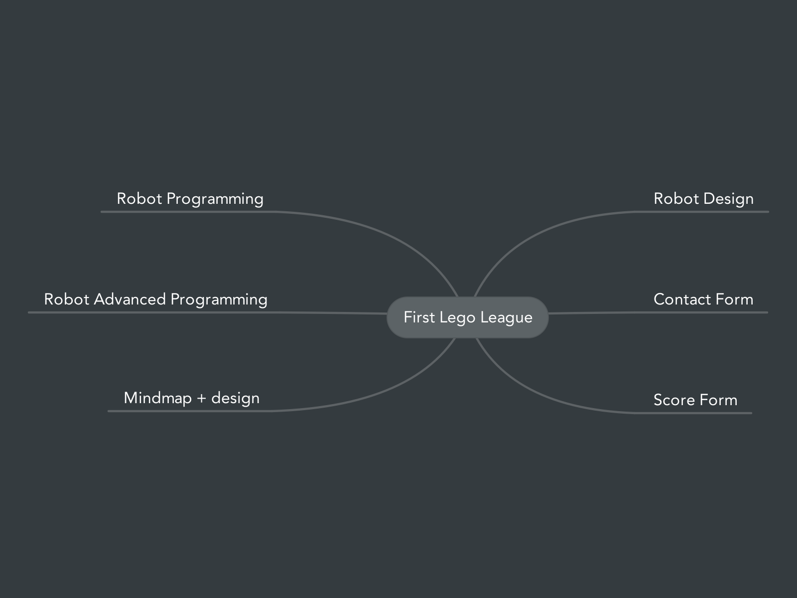
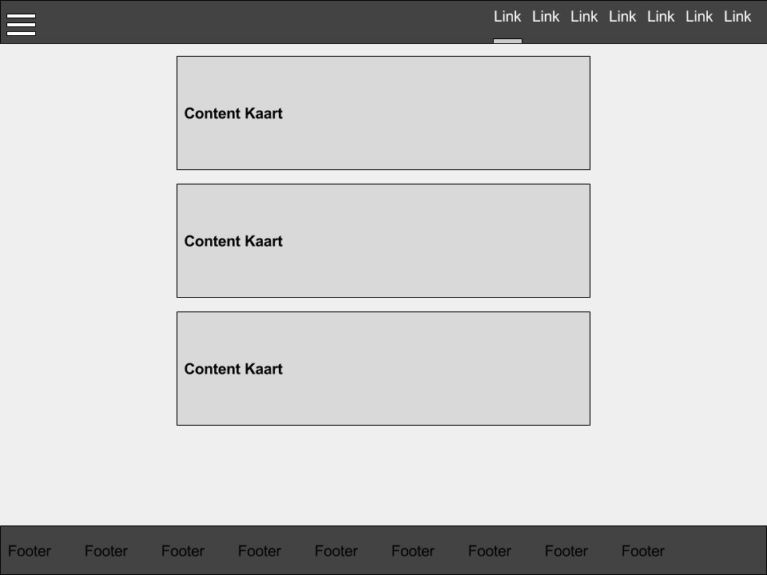

Over de site
Deze website is gemaakt door Gregor Schram. Ik ben leerling op het
Hoeksch Lyceum en dat is dus ook een van de redenen dat deze site bestaat.
Ik had dit namenlijk als opdracht gekregen voor het vak informatica. Ik heb voor mijn site gebruik gemaakt van
Material Design Lite
voor het ontwerp, voor de scripts heb ik jQuery en JavaScript
gebruikt. Ook heb ik voor een klein deel gebruik gemaakt van PHP, dit is alleen gebruikt voor het werkend
maken van het contact formulier. Voor de lego bouwinstructies heb ik Lego Digital Designer gebruikt en
voor de les(sen) heb ik gewoon Word gebruikt om een
mooi PDF te maken, voor de weergave hiervan heb ik PDF.js
gebruikt. Om de site in de lucht te krijgen en te houden heb ik een TK
omein naam aangemaakt en een account op Hostinger. Alle code kan je op mijn Github
vinden via de link hieronder. Voor het bewerken van de code gebruik ik (verplicht) Netbeans.
Mindmap
Hieronder is mijn mindmap te vinden, dit is wat ik origineel allemaal in mijn site wilde verwerken.
Zoals te zien is het niet gelukt om alles te verwerken maar wel een groot deel :)

Ontwerp
Hieronder is mijn ontwerp te vinden, dit is hoe ik wilde dat mijn site eruit kwam te zien.
Dit is wel helemaal gelukt :)
